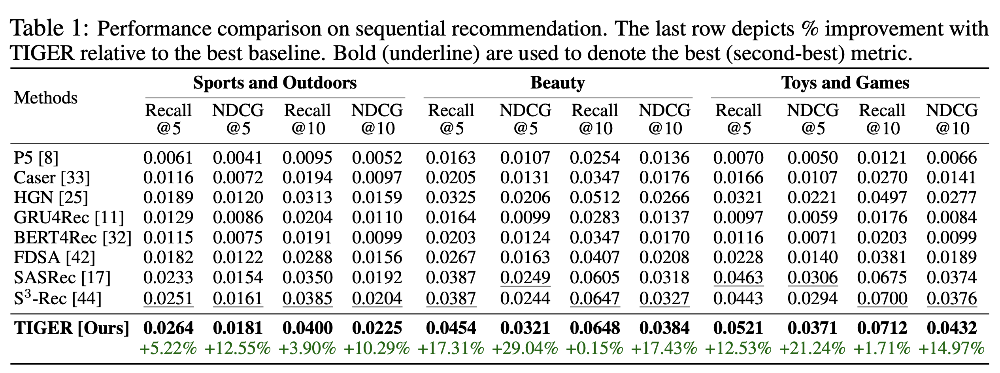
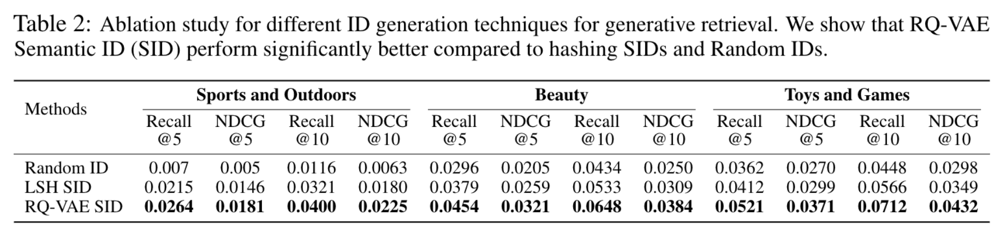
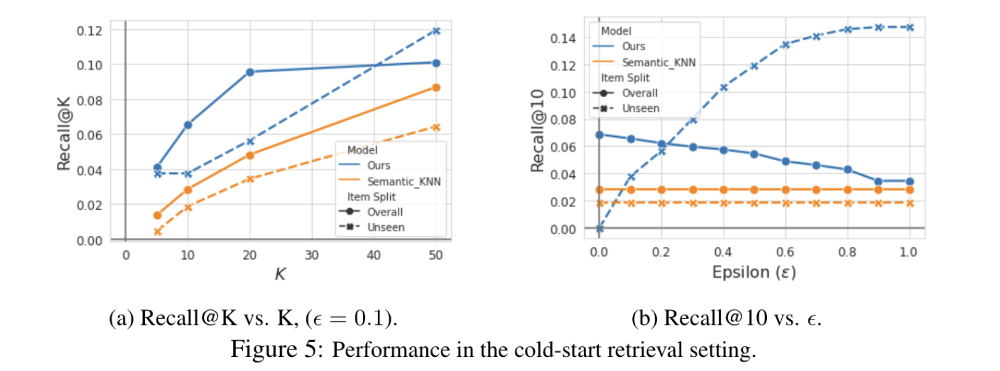
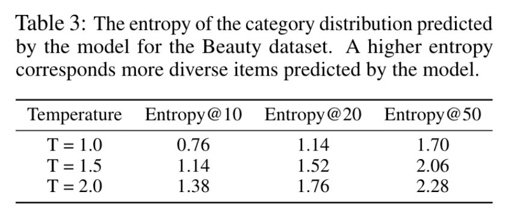
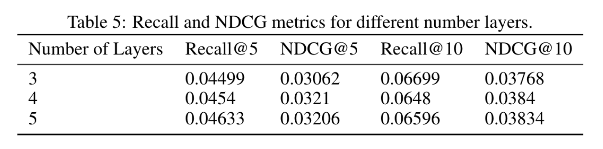
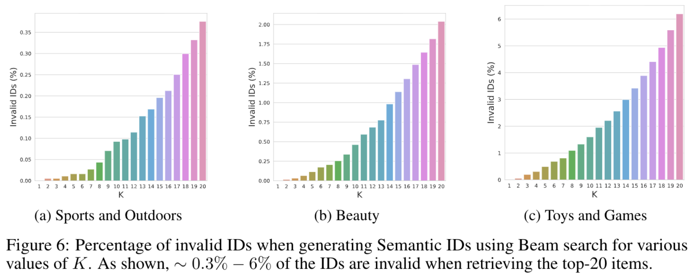

生成式推荐1：Tiger
1 研究背景
- 研究问题：这篇文章要解决的问题是如何在推荐系统中进行生成式检索，以提高推荐的准确性和多样性。
- 研究难点：如何有效地表示和管理大量的物品数据，如何在推荐过程中捕捉用户的长期意图，以及如何在冷启动情况下提供有效的推荐。
2 研究方法
这篇论文提出了一种新的生成式检索框架，称为 TIGER（Transformer Index for GEnerative Recommenders），用于解决推荐系统中的大规模检索问题。
2.1 语义ID生成
使用预训练的内容编码器（如Sentence-T5或BERT）将文本特征转换为一个高维向量。随后，通过量化语义嵌入，为每个项目生成一个唯一的语义ID。
语义ID被定义为一个长度为的码字元组，其中每个码字来自不同的码本。假设每个码本的大小为，则语义ID可以唯一表示的项目数量为。
希望语义ID具有以下属性：语义相似的项目（即内容特征相似或语义嵌入接近的项目）应该具有重叠的语义ID。例如，具有语义ID(10,21,35)的项目应比具有ID(10,23,32)的项目更接近具有ID(10,21,40)的项目。
为了生成语义ID，采用了残差量化变分自编码器（RQ-VAE）。RQ-VAE是一种多层次的向量量化器，通过对输入的残差进行逐层量化来生成一组码字（即语义ID）。以下是RQ-VAE的核心步骤：
- 潜在表示学习：
- 输入通过编码器映射到潜在空间，得到潜在表示。
- 在第零级（d=0），初始残差。
- 多级量化：
- 每一级有一个独立的码本，其中。
- 第零级的最近嵌入通过找到码本中与最接近的向量确定，索引。
- 对于下一级，计算新的残差，并重复上述过程以找到第一级的码字。
- 这一过程递归进行次，最终生成一个由个码字组成的元组，该元组即为语义ID。
- 解码与重构：
- 根据生成的语义ID，计算z的量化表示。
- 被传递给解码器，尝试重构输入。
- RQ-VAE的损失函数包括两部分：
- 重构损失：衡量原始输入x与重构输出之间的差异，。
- 量化损失：促进残差与码本嵌入的一致性， ，其中sg表示停止梯度操作。
- 防止码本坍缩：
- 为了避免大部分输入只映射到少数几个码本向量（即码本坍缩问题），对第一批训练数据进行k均值算法处理，并使用质心作为初始化
2.1.1 其他量化方案的比较
除了RQ-VAE，还探索了其他生成语义ID的方法：
- 局部敏感哈希（LSH）：虽然实现简单，但在实验中表现不如RQ-VAE。
- 分层k均值聚类：容易丢失不同簇之间的语义关系。
- VQ-VAE：尽管在检索性能上与RQ-VAE相当，但缺乏语义ID的层次特性。
2.1.2 处理语义冲突
由于码本大小和语义嵌入分布的原因，可能会出现多个项目映射到相同语义ID的情况（即语义冲突）。为了解决这一问题，在语义ID末尾添加额外的标记以确保其唯一性。例如，将两个共享语义ID(12,24,52)的项目分别表示为(12,24,52,0)和(12,24,52,1)。冲突检测通过维护一个查找表完成，该表将语义ID映射到相应的项目。由于语义ID是整数元组，查找表在存储效率上优于高维嵌入。
2.2 使用语义ID的生成式检索
通过按时间顺序对用户互动过的项目进行排序，为每个用户构建项目序列。然后，给定一个形式为（项目1, …, 项目n）的序列，推荐系统的任务是预测下一个项目项目n+1。提出了一种生成式方法，直接预测下一个项目的语义ID。
具体来说，设 $(c_{i,0}, …, c_{i,m−1}) imc_{1,0}, …, c_{1,m-1}, c_{2,0}, …, c_{2,m-1}, …, c_{n,0}, …, c_{n,m-1}）n+1(c_{n+1,0}, …, c_{n+1,m-1})$。
鉴于框架的生成性质，解码器生成的语义ID可能与推荐语料库中的项目不匹配。然而，在附录（图6）中展示的那样，这样的事件发生的概率很低。在附录E中进一步讨论了如何处理这类事件。
3 实验
数据集
- 使用了亚马逊产品评论数据集中的三个公开真实世界基准数据集：
- 时间范围：1996年5月到2014年7月。
- 包含用户评论和项目元数据。
- 用于序列推荐任务的三个类别：
- 美容
- 运动与户外
- 玩具与游戏
- 数据集统计和预处理细节在附录C中讨论。
评估指标
- 使用两个关键指标来评估推荐性能：
- Top-k召回率 (Recall@K)：衡量推荐列表中命中目标项目的比例。
- 标准化折扣累积增益 (NDCG@K)：考虑推荐列表中相关项目的排名，赋予较高权重给靠前的项目。
K值设定为5和10。
RQ-VAE 实现细节
使用预训练的 Sentence-T5 模型提取项目语义嵌入（维度为768），输入包括项目的标题、价格、品牌和类别等特征。
模型结构如下：
- 编码器：
- 三层中间层，大小分别为512、256和128。
- 激活函数为ReLU。
- 最终潜在表示维度为32。
- 残差量化器：
- 三级残差量化，每个级别维护一个基数为256的codebook。
- 每个向量维度为32。
- 解码器：
- 将量化表示解码回语义输入嵌入。
训练细节：
- 总损失计算使用超参数 。
- 训练轮次为20k，确保代码本使用率 ≥ 80%。
- 使用 Adagrad 优化器，学习率为0.4，批量大小为1024。
- 训练完成后，为每个项目生成唯一的三元组语义ID，并在必要时添加第四码字以避免冲突。
序列到序列模型实现细节
架构
- 基于变压器（Transformer）的编码器-解码器架构。
- 使用开源 T5X 框架实现。
- 词汇表包含：
- 每个语义码字的标记（共1024个，256 x 4）。
- 特定于用户的标记（2000个，使用哈希技巧映射原始用户ID）。
输入序列构建
- 输入序列由用户ID标记和项目互动历史的语义ID标记组成。
- 添加用户ID有助于个性化推荐。
模型配置
- 编码器和解码器各4层，每层有6个自注意力头，每个头的维度为64。
- 激活函数为ReLU。
- MLP 和输入维度分别设置为1024和128。
- 丢弃率为0.1。
- 模型总参数约为1300万。
- 学习率：
- 前10000步固定为0.01。
- 随后遵循逆平方根衰减计划。
3.2 性能比较

3.3 生成的item表示
在图4中分析了为亚马逊美妆数据集学到的RQ-VAE语义ID。为了说明，将RQ-VAE的层数设为3层，分别对应4、16和256的代码本大小，即对于一个给定项目（c1，c2，c3）的语义ID，，且。

在图4a中，用c1标注每个项目的类别，以便可视化数据集整体类别分布中的c1特定类别。如图4a所示，c1捕捉了项目的高层类别。例如，c1=3包含了大多数与“头发”相关的产品。同样地，大多数c1=1的产品是用于面部、嘴唇和眼睛的“化妆品”和“皮肤”产品。
还通过固定c1并可视化图4b中所有可能的c2值的类别分布，来可视化RQ-VAE语义ID的层次性质。再次发现第二个码字c2进一步将c1捕获的高级语义细分为更细致的类别。RQ-VAE学习到的语义ID的层次性质开启了丰富的新能力。

针对语义ID的生成方法，对比了三种方式：
- LSH语义ID：通过随机超平面投影生成二进制向量，并转化为整数码字，重复多次得到多个码字。实验中使用8个超平面和4组独立投影（m=4），但其性能不如RQ-VAE。
- RQ-VAE语义ID：利用深度神经网络学习语义信息，量化效果优于基于随机投影的LSH方法。
- 随机ID基线：为每个项目分配随机生成的码字，虽然基数与RQ-VAE相似，但性能显著低于语义ID。
3.4 泛化性和多样性

对于KNN，使用语义表示空间来执行最近邻搜索。将基于KNN的基线称为Semantic_KNN。图5a显示，当ε=0.1时，在所有Recall@K指标上一致性地优于Semantic_KNN。
为了预测多样化的项目。我们展示了在解码过程中基于温度的采样可以有效地用来控制模型预测的多样性。虽然基于温度的采样可以应用于任何现有的推荐模型，但由于RQ-VAE语义ID的特性，TIGER允许跨不同层级进行采样。
使用熵@K指标定量衡量预测的多样性，其中熵是根据模型预测的前K个项目的真实类别分布计算得出的。在表3中报告了不同温度值的熵@K。

观察到，在解码阶段进行温度采样可以有效增加项目真实类别的多样性。还进行了表4中的定性分析。
3.5 消融实验
对模型的层数进行消融：

3.6 无效语义ID
模型可能会预测出无效的语义ID，即该语义ID没有和任何一个item进行映射。实验数据集中的物品个数占ID空间的25%左右。
一个观察是尽管有效ID的数量只占完整空间的一小部分，但是观察到模型预测的ID总是有效的，

如果想要解决无效ID的问题，可以增加束宽并过滤无效ID。
4 总结
提出了一种新的生成式检索框架TIGER，通过引入语义ID和Transformer模型，显著提高了推荐系统的性能和多样性。实验结果表明，TIGER在多个基准数据集上均优于现有的基线方法，并且在冷启动推荐和推荐多样性方面也表现出色。未来的研究方向包括优化模型的推理效率和进一步探索生成式检索在推荐系统中的应用。
 微信
微信 支付宝
支付宝